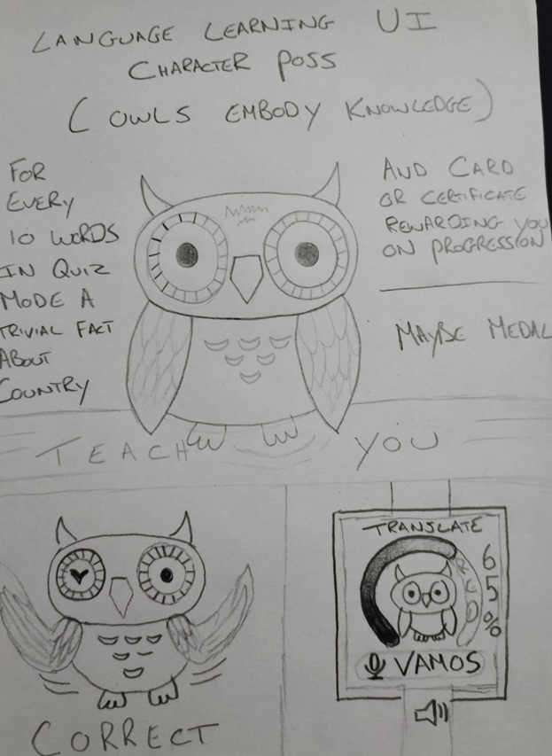
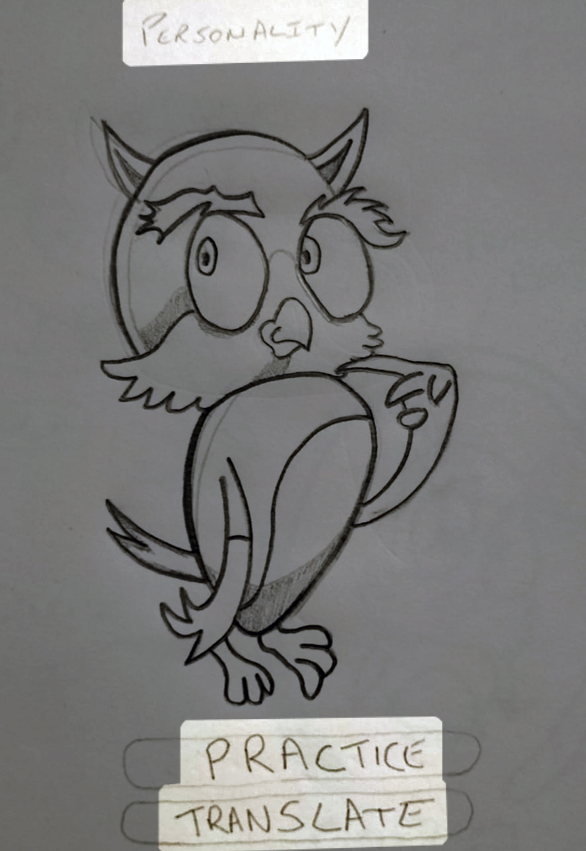
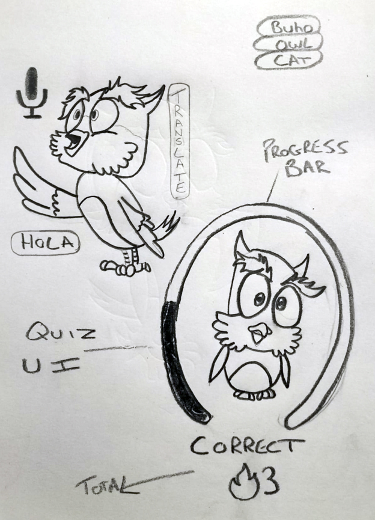
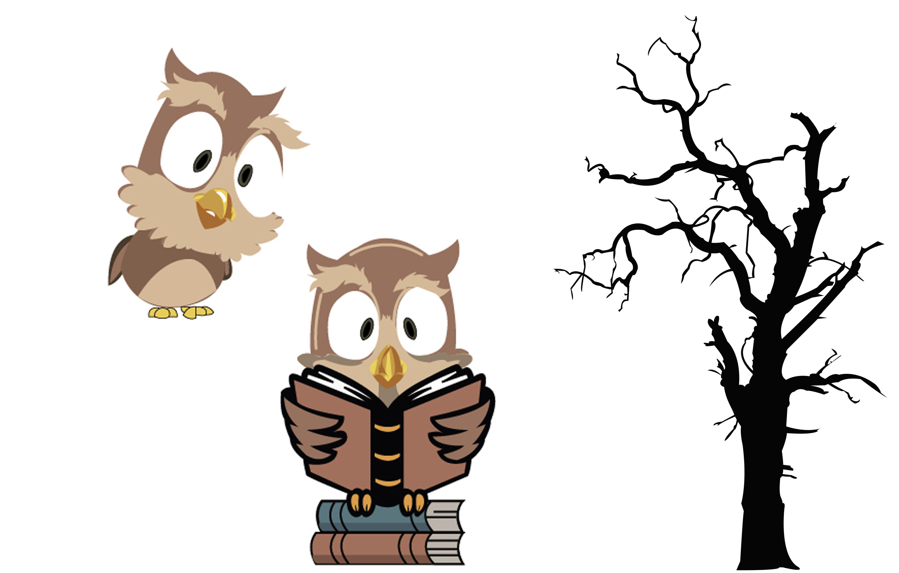
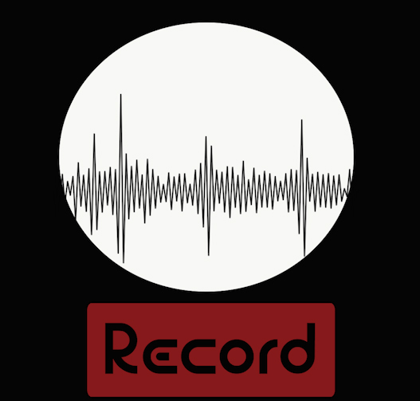
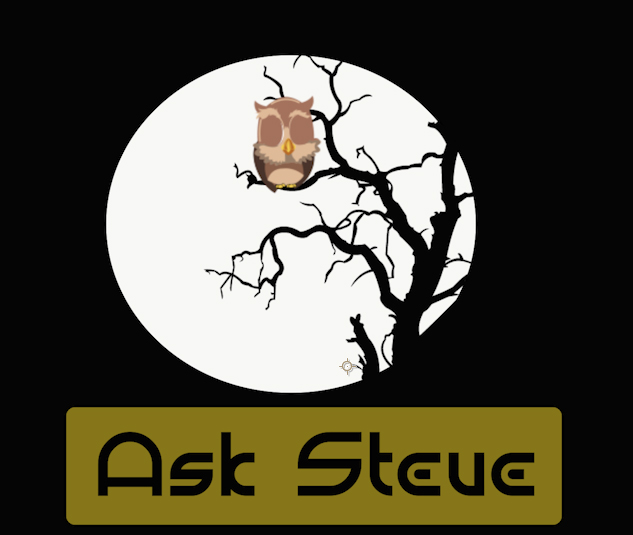
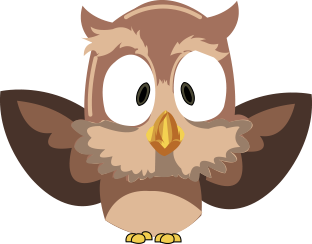
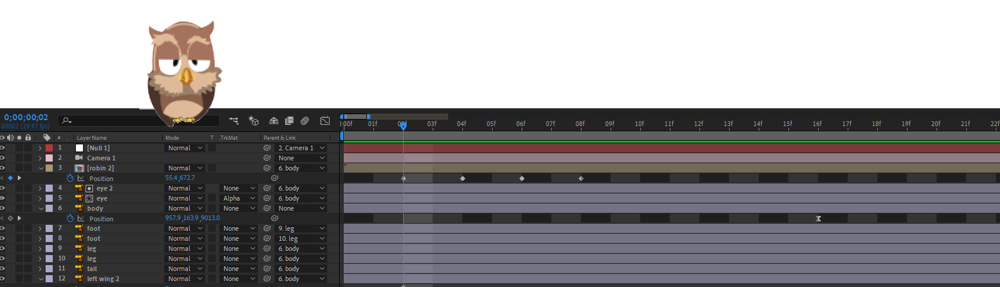
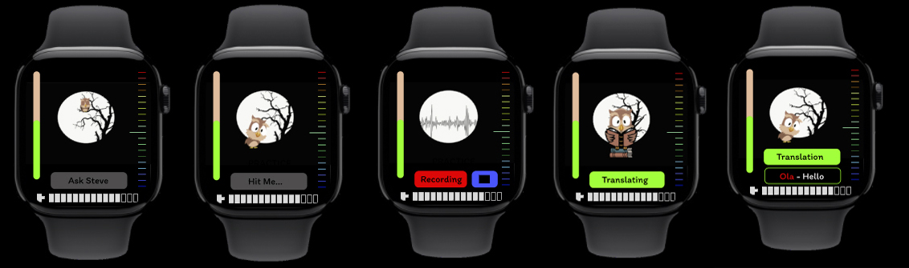
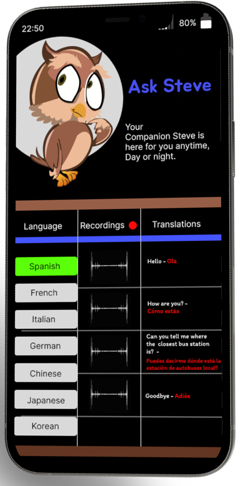

Early Sketches

I had the owl idea set in my mind but from my research with Smartwatch UI's I noticed alot of the elements were stat based. So I sketched out a few drawings to see how the bird would work with the extra elements. Making the bird the central focus or emphasisising the other elements was what I was orginally considering. I thought a daily quiz to learn words and phrases would be a nice aspect. My lecturer then told me to simplify this and just make it a translation app. I thought this could work both ways. With a companion mobile app recording all your words and phrases, you not only got the translations but got to learn the languages with your recordings.


These sketches were obviosly drawn before I decided on taking the quiz element out. At this stage I was leaning more on giving the character a little personality with didderent poses for the various aspects of the application.
Illustrations



I was given the idea of the bird flying into the foreground and you press on it for the translation. This got me thinking of the Interface again and instead of him just flying around the screen, I thought him waking up from sleeping on a tree and landing on the forground would work well. The top left bird seemed like he was listening in, this seemed like the perfect pose for him after landing. For the translation process an hour glass turning was suggested to me but I thought the owl looking up a book would be a nicer fit. For the recording aspect I thought an audio spectrum was perfect, It was from this I got the moon idea. The Bauhaus typeface was really just a placeholder at this stage.
Animation

This is were the fun began, waking the bird from the tree and having him fly to the foreground. This was a bit of a challenge, fortunately I had previously created a simple bird animation and simply adjusted the perspective and cut the the keyframes I didnt need.


I knew with the timeframe I wouldn't be able to create the app exactly the way I wanted it. After I received the feedback I discovered there were extra elements in my UI that could have been removed. The Volume bar on the left could have been used on just the home page, the battery life meter at the bottom did'nt need to be there at all and the audio sprectrum on the right (an element I thought would have worked with the quiz aspect showing the level of difficulty) was also something I could have also removed. Aesthetically I think they bring the UI together nicely but they really don't serve any meaningful purpose. If I removed them It would have freed up space to enlarge the elements you do actually use and make it a much more legible Interface.
Phone Companion App

With this being a speculative design. I wanted it to be more than just a translating app. I was set from the beginning on this being an application much like Dualingo...educational. With the archive of the multiple translations I felt this would be a great way to learn your chosen language more efficently. I tried to keep the Interface as simple as possible using the same colour palette from the watch UI. Chosing 'Item' for the typeface was a case of finding a simple font that was fun and legible.